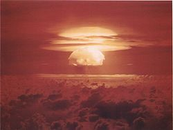
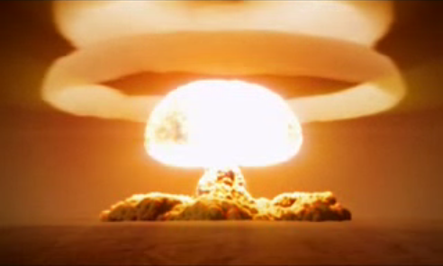

| Index | In the Making | Development and Warfare Usage | Other Examples |
|  |  |
| After World War 2 had ended, all major powers wanted to develop atomic bombs for lifelines against other nations, or offensive weapons for preemptive strikes. When the Cold War started in 1947, it started the Arms Race with it, which was America and the Soviet Union competing to make the biggest bombs they could. For the US, it was Castle Bravo which was about 15 megatons, whereas the Soviet Union's Tsar Bomba was about 50 megatons. To see the Castle Bravo detonation, click here. | |
|
|